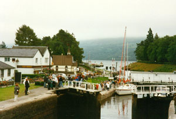

The High Road to Fort Augustus
Coir'-a-Ghearraig
Tune
Captain Simon Fraser's Collection N°169(Sequenced by Christian Souchon)


|
When Bonnie Prince Charlie rose in 1745 Lovat again tried to hedge his bets, but this time he was forced to more demonstrably support the Jacobites, although when he heard of their defeat at Culloden he said ‘none but a mad fool would have fought that day.’ Lovat and the Prince met the night after the battle at Lovat’s house of Gorthlech on Loch Mhor, both fleeing the next day; Charlie eventually to France, and Lovat to an island on Lake Morar. He was captured there by Captain Ferguson, trying to hide in a hollow tree but given away by his uncovered bare legs.
Lovat, old and infirm, was taken to London in a litter and was imprisoned in the tower until March, 1747, when he was tried at Westminster Hall. (Source: http://www.ibiblio.org/fiddlers/LORC_LORP.html)
"The words associated with this air give anecdotes regarding that stupendous work, the road cut in traverses, by General Wade, down the face of a mountain, in forming a communication betwixt Fort Augustus and Garvamore.
General Wade
, referred to by Fraser in the passage above, built the fort in 1730 along with a network of roads and bridges, and he is recognized today as a great engineer. The old fort was transformed into a Benedictine Abbey which survived until the present day, although it recently has been closed.
|
Lorsque Charles Stuart apparut en 1745 Lovat essaya à nouveau de jouer sur tous les tableaux, mais cette fois il fut obligé de s'engager de façon plus nette en faveur des Jacobites, bien que, lorsqu'il apprit la nouvelle de leur défaite à Culloden, il ait déclaré: "Seul un imbécile pouvait livrer bataille ce jour-là".
Le Prince rencontra Lovat après la bataille chez lui à Gorthlech on Loch Mhor après quoi tous deux prirent la fuite: Charlie pour rejoindre la France et Lovat une île du Lac Morar. Il fut capturé par le Capitaine Ferguson, alors qu'il tentait de se cacher dans un arbre creux mais il fut trahi par ses jambes qui dépassaient. Lovat, vieux et infirme, fut transporté à Londres sur une civière et emprisonné à la Tour de Londres jusqu'en mars 1747, pour être jugé par les Lords à Westminster Hall.
(Source: http://www.ibiblio.org/fiddlers/LORC_LORP.html)
"Les paroles qui accompagnent cet air portent sur des anecdotes concernant ce surprenant ouvrage d'art, une route de traverse tracée par le Général Wade, sur le flanc d'une montagne, et qui relie Fort Augustus et Garvamore.
Le Fort qui donne son nom à Fort Augustus faisait partie d'une série d'ouvrages élevés par les Hanovriens pour contrôler le Sillon Calédonien: le Fort George près d'Inverness, Fort Augustus au centre, au bord du Loch Ness et Fort William à l'extrémité sud. Tous ces noms étaient ceux de membres de la Maison de Hanovre: Augustus, celui du fils du roi Georges II, Guillaume-Auguste, Duc de Cumberland qui tira une douteuse réputation de son rôle à Culloden et après, qui lui valut le surnom de "Boucher". Après la défaite de Charlie, il s'établit à Fort Augustus, refusant de voir les exactions commises par ses troupes sur la population locale et les souffrances du peuple des Highlands durant le rude hiver 1746.
Le
Général Wade
à qui Fraser fait allusion dans le passage ci-dessus, construisit le fort en 1730 ainsi qu'un réseau de routes et de ponts, et on rend hommage aujourd'hui à ses talents d'ingénieur. La vieille forteresse fut transformée en abbaye bénédictine qui a continué d'exister jusqu'à une période récente qui a vu sa fermeture.
|